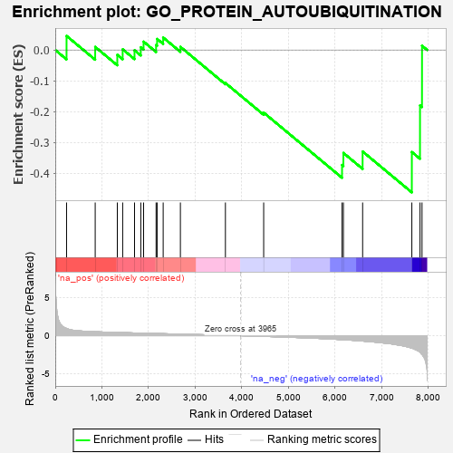
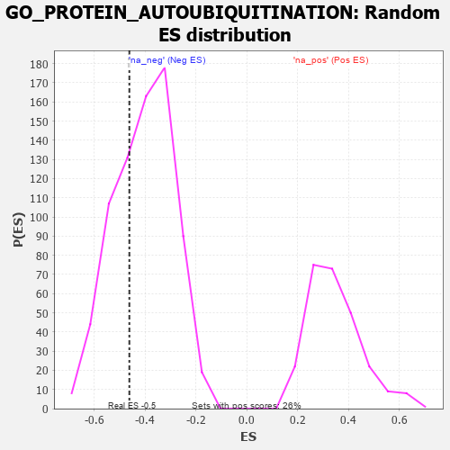

| | | Dataset | 7d |
| Phenotype | NoPhenotypeAvailable |
| Upregulated in class | na_neg |
| GeneSet | GO_PROTEIN_AUTOUBIQUITINATION |
| Enrichment Score (ES) | -0.4613957 |
| Normalized Enrichment Score (NES) | -1.143571 |
| Nominal p-value | 0.3189189 |
| FDR q-value | 0.70627546 |
| FWER p-Value | 1.0 |
Table: GSEA Results Summary

Fig 1: Enrichment plot: GO_PROTEIN_AUTOUBIQUITINATION
Profile of the Running ES Score & Positions of GeneSet Members on the Rank Ordered List
| PROBE | GENE SYMBOL | GENE_TITLE | RANK IN GENE LIST | RANK METRIC SCORE | RUNNING ES | CORE ENRICHMENT | | 1 | NFX1 | | | 242 | 0.949 | 0.0456 | No |
| 2 | AMFR | | | 856 | 0.518 | 0.0100 | No |
| 3 | RNF11 | | | 1330 | 0.423 | -0.0156 | No |
| 4 | RBX1 | | | 1445 | 0.401 | 0.0022 | No |
| 5 | ERCC8 | | | 1699 | 0.357 | -0.0010 | No |
| 6 | RNF10 | | | 1833 | 0.331 | 0.0088 | No |
| 7 | CUL3 | | | 1893 | 0.321 | 0.0271 | No |
| 8 | CNOT4 | | | 2161 | 0.283 | 0.0162 | No |
| 9 | UBE2A | | | 2183 | 0.278 | 0.0358 | No |
| 10 | UBE4B | | | 2313 | 0.258 | 0.0403 | No |
| 11 | SASH1 | | | 2682 | 0.201 | 0.0101 | No |
| 12 | LTN1 | | | 3647 | 0.052 | -0.1069 | No |
| 13 | LRRK2 | | | 4467 | -0.087 | -0.2029 | No |
| 14 | RNF8 | | | 6147 | -0.518 | -0.3725 | Yes |
| 15 | RAG1 | | | 6176 | -0.530 | -0.3335 | Yes |
| 16 | RNF41 | | | 6588 | -0.703 | -0.3289 | Yes |
| 17 | TAF1 | | | 7643 | -1.633 | -0.3305 | Yes |
| 18 | TRAF6 | | | 7818 | -2.157 | -0.1797 | Yes |
| 19 | TRAF2 | | | 7861 | -2.481 | 0.0138 | Yes |
Table: GSEA details [plain text format]

Fig 2: GO_PROTEIN_AUTOUBIQUITINATION: Random ES distribution
Gene set null distribution of ES for GO_PROTEIN_AUTOUBIQUITINATION